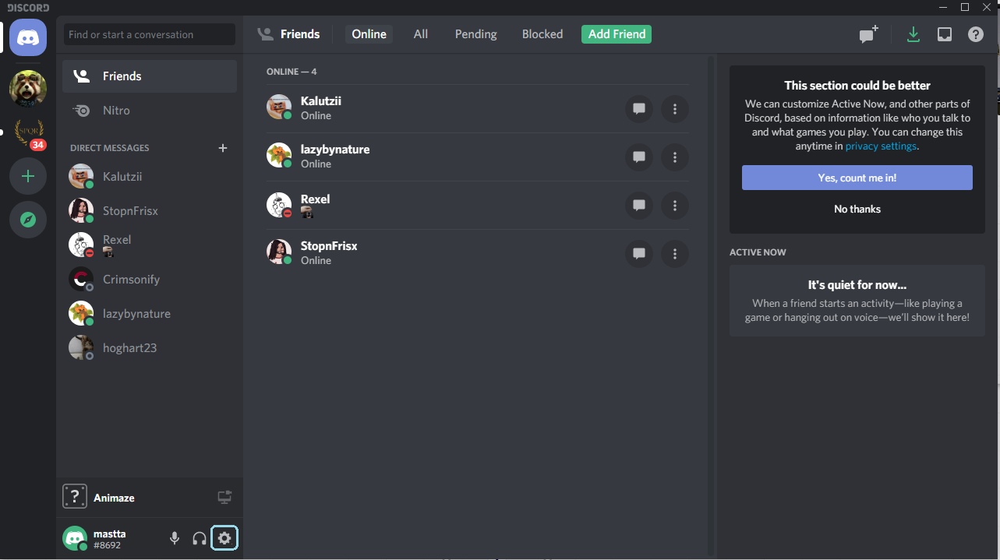
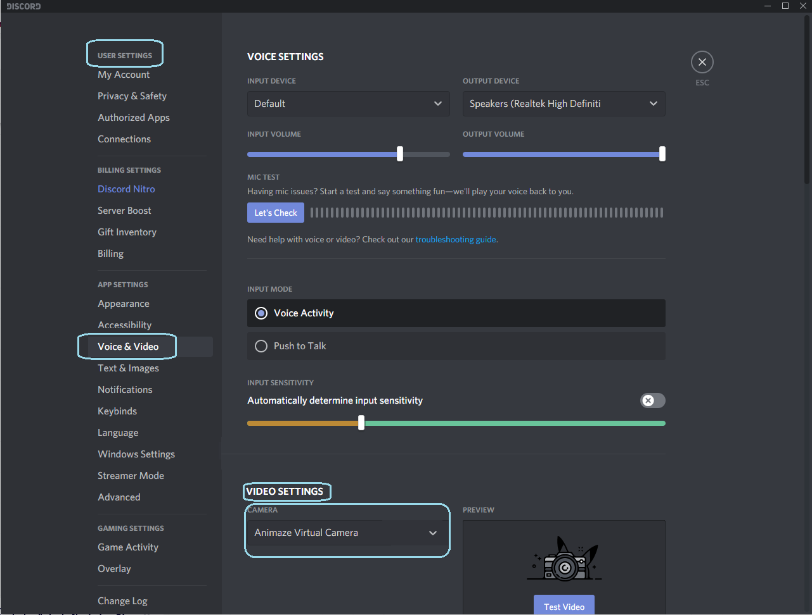
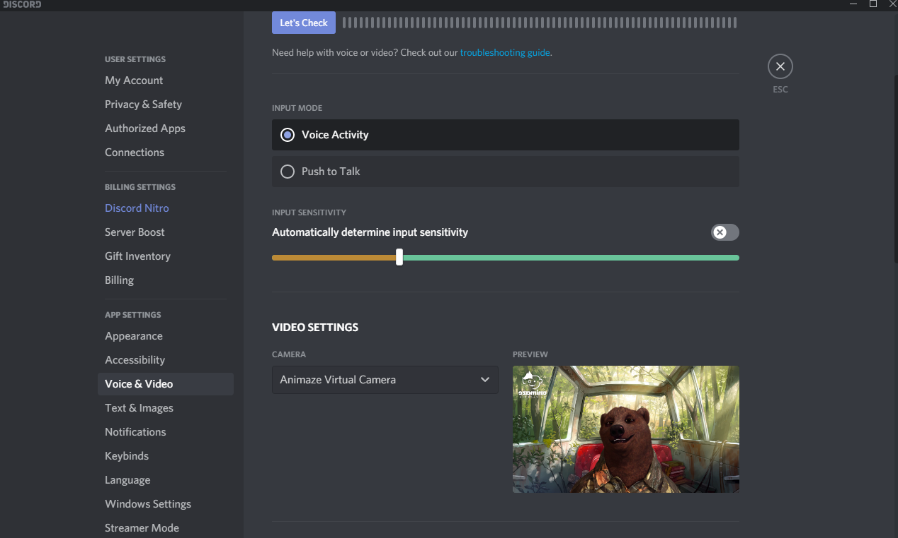
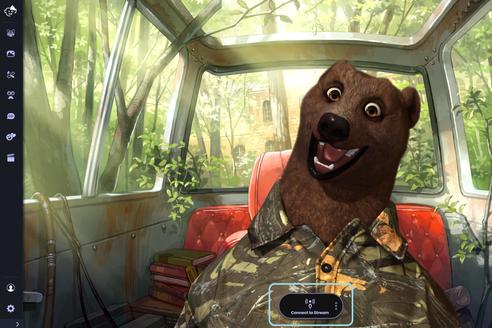
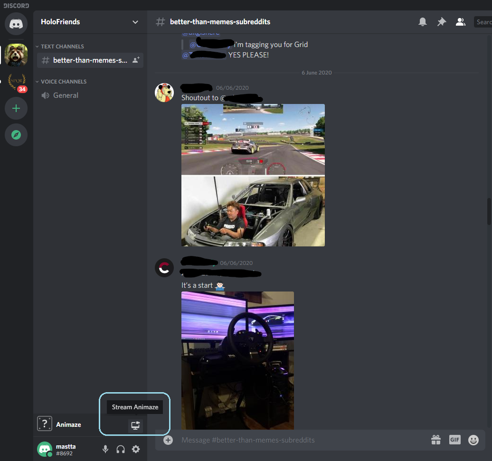
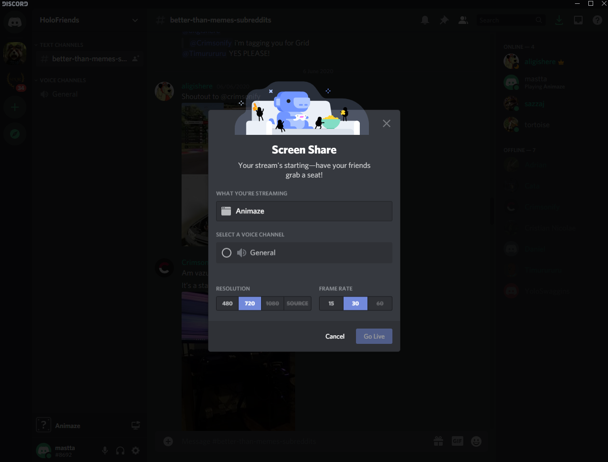

Animaze Desktop: How do I video chat/stream on Discord?
First of all, install the Discord app from their official website and open the app! Please note that the Animaze app only works with the Discord Windows app at the moment!
Go to User Settings

Navigate towards the Voice and Video Tab and from the Video Settings Category select Animaze Virtual Webcam


Go back to Animaze and click the 'Connect to Stream' button


